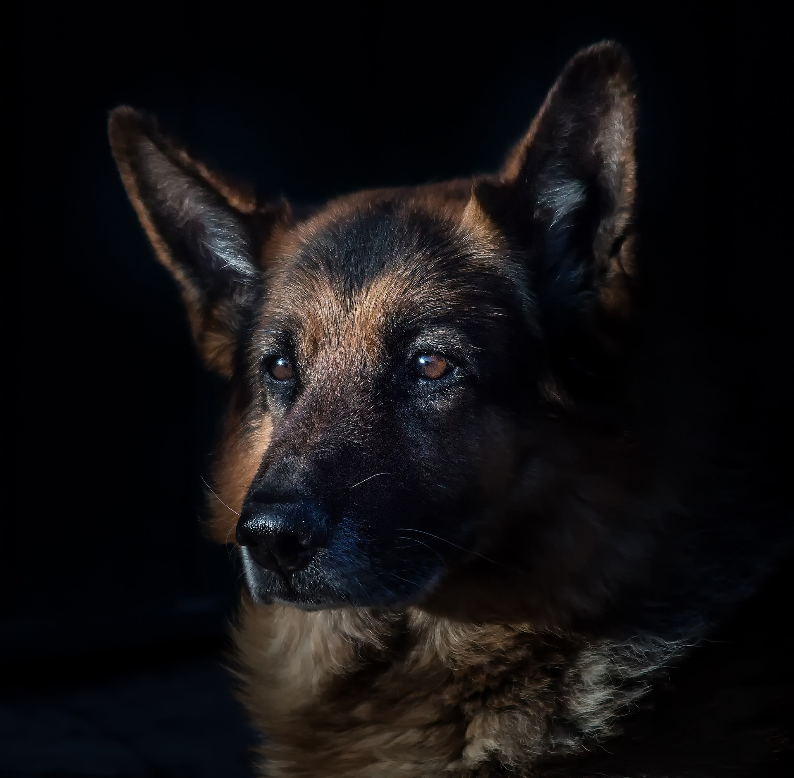
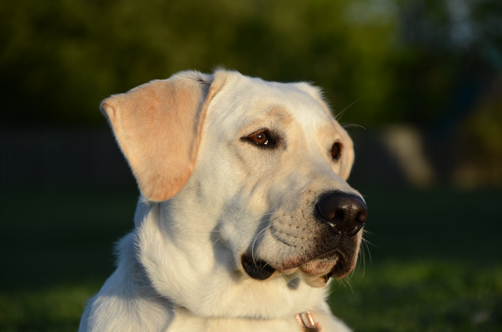
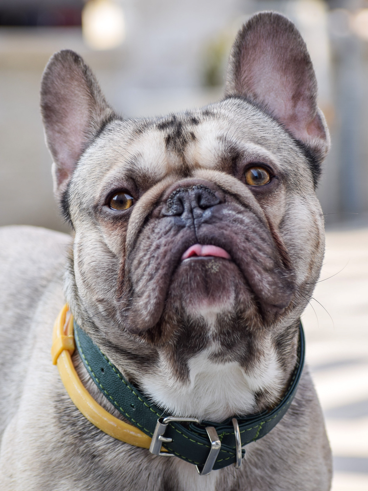
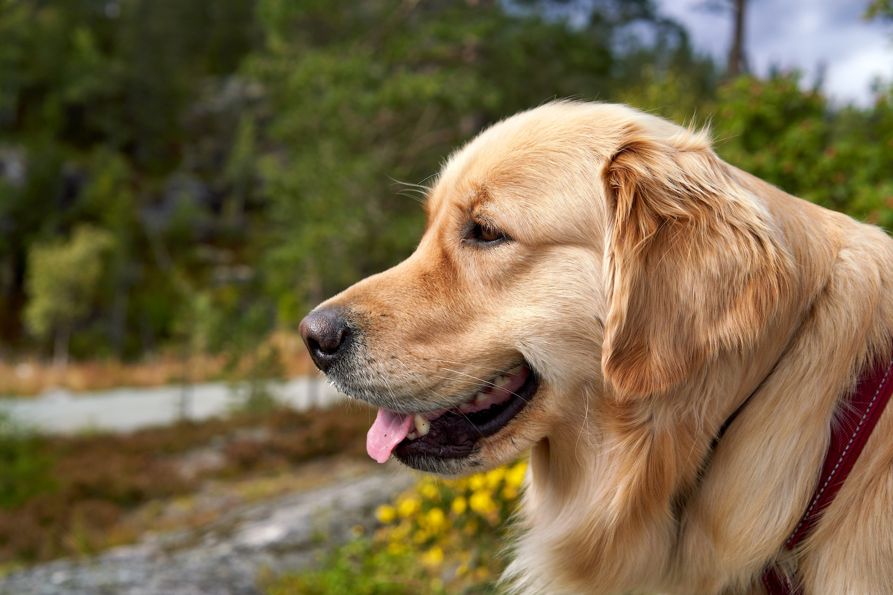
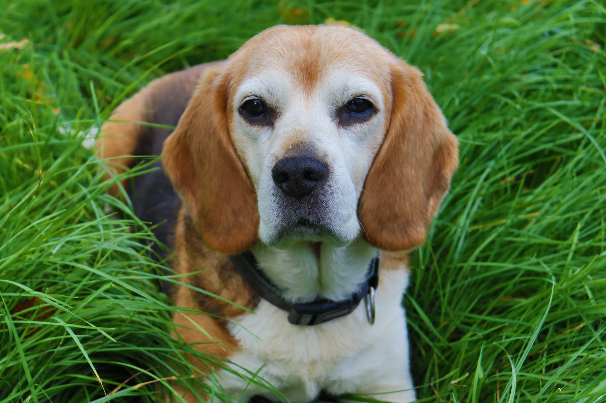
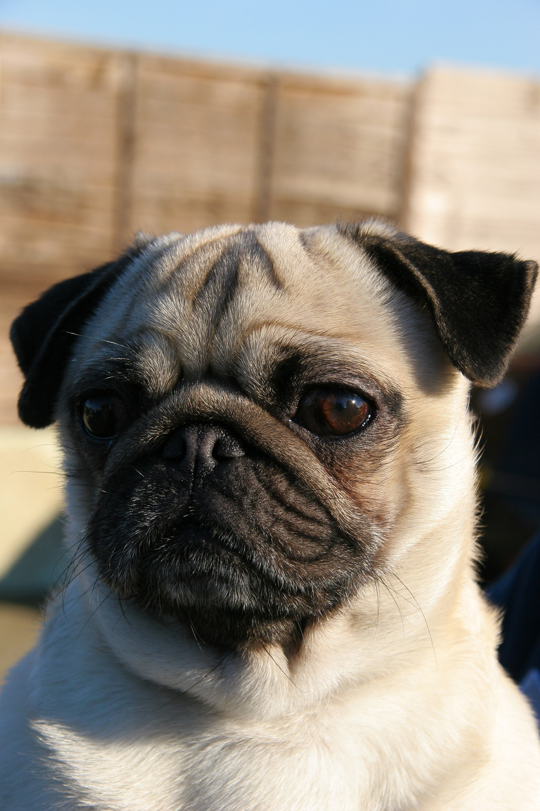
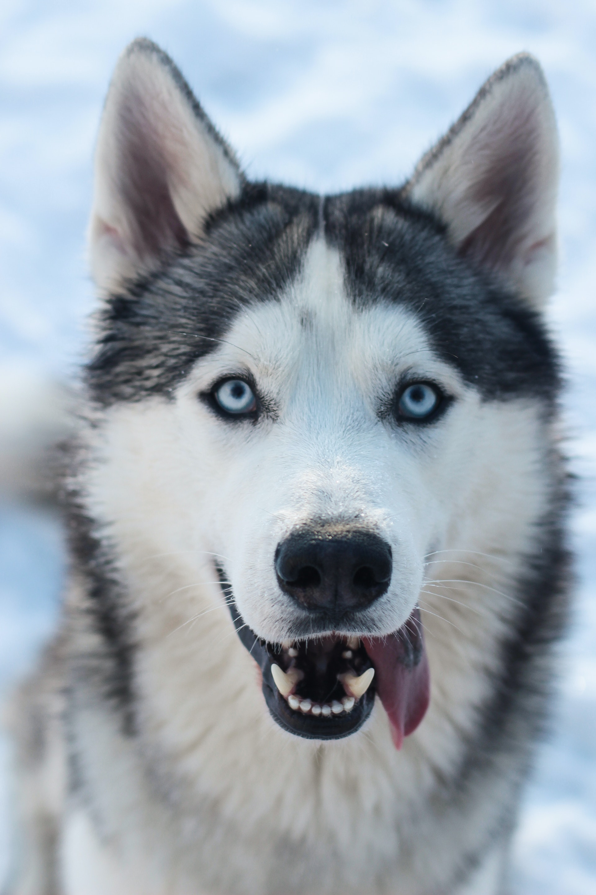
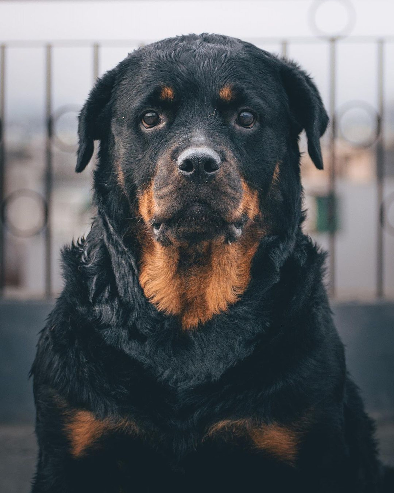

German Shepherd
A German Shepherd is a breed of dog that is known for its intelligence, loyalty, and protective nature. These dogs are often used as police dogs, search and rescue dogs, and service dogs, but they also make great pets.
# 01

Labrador Retriever
Labrador Retrievers are a popular breed of dog known for their intelligence, playfulness, and affectionate nature. They are often used as service dogs, therapy dogs, and search and rescue dogs due to their ability to learn quickly and work well with humans.
# 02

French Bulldog
French Bulldogs make great pets for families and individuals who are looking for a small, affectionate companion. They are playful and energetic, but they don't require as much exercise as some larger breeds. With proper care and training, Frenchies can bring a lot of joy and companionship to your life.
# 03

Golden Retriever
Golden Retrievers are generally friendly and good with children. They are intelligent and trainable, and they excel in obedience and agility competitions. They are also very energetic and require regular exercise and mental stimulation to stay happy and healthy.
# 04

Yorkshire Terrier
Yorkshire Terriers, also known as "Yorkies," are a small breed of dog known for their long, silky coat and playful personality. They are a popular choice as a companion dog due to their small size and affectionate nature.
# 05

Beagle
Beagles are a small breed of dog known for their energetic and curious nature, as well as their distinctive howl. They are often used as hunting dogs due to their keen sense of smell, but they also make great pets.
# 06

Boxers
Boxers are a medium to large breed of dog known for their muscular build, playful personality, and intelligent nature. They are often used as guard dogs, police dogs, and service dogs, but they also make great pets.
# 07

Australian Shepherd
Australian Shepherds, also known as "Aussies," are a medium to large breed of dog known for their intelligence, athleticism, and herding instinct. They are often used as working dogs on farms and ranches, but they also make great pets.
# 08

Pug
Pugs are a small breed of dog known for their wrinkled face, playful personality, and affectionate nature. They are a popular choice as a companion dog due to their small size and friendly disposition.
# 09

Siberian Husky
Siberian Huskies are a medium to large breed of dog known for their thick, fluffy coat, striking blue eyes, and energetic personality. They were originally bred as sled dogs in Siberia, but they also make great pets.
# 10

Rottweiler
Rottweilers are a large breed of dog known for their muscular build, intelligent and loyal nature, and protective instincts. They are often used as guard dogs, police dogs, and service dogs, but they also make great pets.
# 11

Maltese
Maltese are a small breed of dog known for their long, silky coat and affectionate nature. They are a popular choice as a companion dog due to their small size and friendly disposition.
# 12